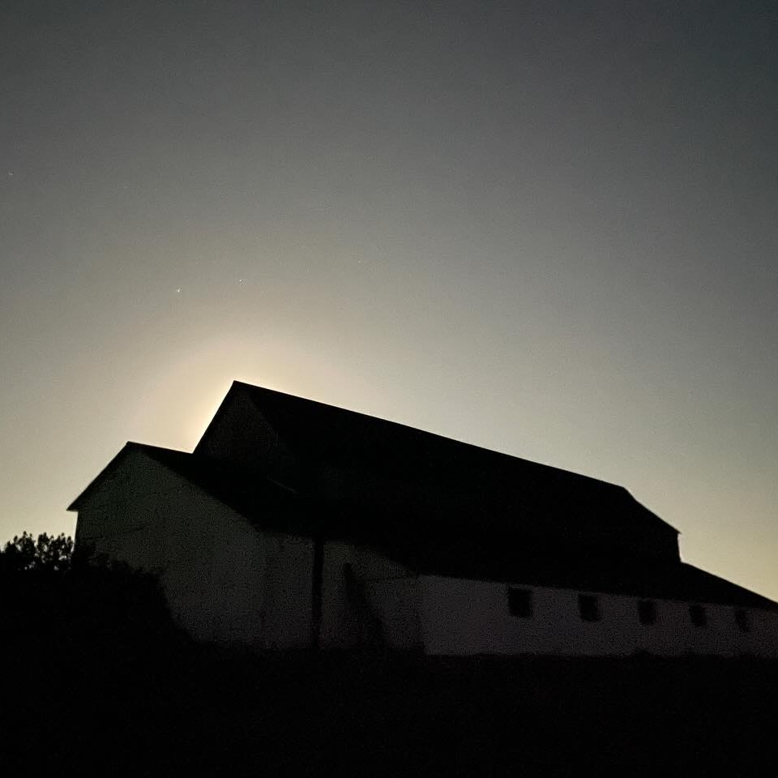

Hi, I'm Eve (Yi) Lu‚ú®
I'm a data journalist. I tell stories with dataüìä, create graphicsüé® and sometimes make filmsüìπ.
About
I am a recent graduate of Stanford University in Data Journalism, and a data reporter intern for Tampa Bay Times in the summer of 2024. Prior to Stanford, I hold a M.A. degree in Journalism at the University of Miami and an alumna of the Lede Program in 2022. I care about social gender inequalities and global environmental matters. Born and raised in Shanghai, I speak English and Mandarin. While not coding, I watch thriller movies alone üçø and collect Hello Kittys üéÄ‚Çç^. .^‚Çé‚üÜ.
Tools I use
‚ñà‚ñà‚ñà‚ñà‚ñí‚ñí‚ñí‚ñí‚ñí‚ñí‚ñí‚ñí‚ñí ?%: I've been self-teaching Sveltebit by bit lately.
Python Adobe Illustrator Javascript/D3.js HTML/CSS Mapbox QGIS Datawrapper Flourish etc
DATA STORY
I make graphics
Who Favors Tampa Bay the Most ?

How Much It Takes to Get an Abortion in the 'PURPLE' State of Florida?

Gaza Killed Journalist Database
U.S. Prison Phone Rate

The Biggest Weapon
NEWS REPORTING
I write words

- 

California’s Parental Notification Policy Ignites Controversy Over Trans Youth Rights
Sacramento, California
Back on Screen
Miami, Florida

Three months later in Surfside: Some mourning, some moving on
Surfside, Florida


DOCUMENTARY
I produce films
© Copyright ･ Svelte template ･Sikandar S. Bhide